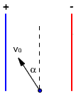
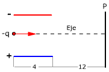

|
Tenemos un
campo eléctrico uniforme de 104 N/C:
a) Calcula la fuerza que sufriría un electrón
dentro de este campo y compárala con su peso
b) Halla el tiempo que tardará el electrón
en recorrer 1 cm, partiendo del reposo, y la energía cinéti-ca, en eV,
que adquirirá
Datos del electrón: m = 9.1·10-31
kg, q = -1.6·10-19 C |
Dos placas paralelas, separadas 2 cm, tienen
cargas iguales y opuestas. En la placa negativa se li-bera un electrón,
sin velocidad inicial, que choca con la placa positiva 1.5·10-8
s después. Calcula la intensidad del campo eléctrico entre placas y la
velocidad del electrón cuando choca con la placa positiva
Datos del electrón:
m = 9.1·10-31 kg, q = -1.6·10-19 C |
Entre dos placas paralelas separadas
una distancia de 4 cm existe una d.d.p de 1600 V. Un electrón se libera
de la placa negativa en el mismo instante en que un protón lo hace de
la positiva:
a) ¿A qué distancia de la placa positiva
se cruzan?
b) Compara sus velocidades al llegar
a cada placa
Datos: Electrón: m = 9.1·10-31
kg, q = -1.6·10-19 C Protón:
m = 1.67·10-27 kg q = 1.6·10-19 C |
Un electrón moviéndose a 107
m/s, en dirección 30º bajo la horizontal, entra en un campo uniforme de
5000 N/C dirigido verticalmente hacia abajo. Calcula:
a) Máxima desviación vertical que experimenta
respecto al punto de entrada
b) Distancia horizontal recorrida hasta volver
al nivel inicial
Datos del electrón: m = 9.1·10-31
kg, q = -1.6·10-19 C |
|
Entre las placas metálicas,
longitud L y separación d, hay un campo eléctrico
uniforme E. Un electrón penetra entre las placas por un punto
equidistante de ambas, moviéndose con velocidad v0
en dirección paralela a estas. Determina el máximo
valor del campo para que el electrón no choque con las placas
|
|
 |
Entre las
placas metálicas hay un campo uniforme de 104
N/C Un positrón (Elec-trón positivo) penetra entre
las placas por un punto equidistante de ambas, mo-viéndose
con velocidad 107 m/s en una dirección que forma
30º con la dirección de estas Determina la longitud
y separación de las placas para que el positrón no
golpee ninguna de ellas
Datos del positrón:
m= 9.11·10-31 kg, q = 1.6·10-19
C |
|
 |
Se lanza
un electrón con velocidad 2·107 m/s en la dirección de
un eje equidistante de las placas de un tubo de rayos catódicos
entre las que existe un campo uniforme de 2·104 N/C dirigido
hacia arriba. Se pide:
a) Velocidad al salir de las
placas y distancia vertical recorrida
b) Distancia al eje del punto
de impacto con la pantalla P
Datos del electrón: m = 9.1·10-31
kg, q = -1.6·10-19 C |
|
Entre dos placas metálicas,
separadas 4 cm, hay una d.d.p de 200 V. Desde la placa positiva se lanza
un electrón con velocidad 107 m/s hacia la placa negativa
¿Con qué velocidad llegará?
Datos del electrón: m = 9.1·10-31
kg, q = -1.6·10-19 C |
Dos placas metálicas paralelas están separadas
2 cm siendo la d.d.p entre ellas 12000 V. Calcula la variación de energía
cinética que sufriría un electrón al recorrer 1 cm en una dirección que
formase 30º con la del campo
Datos del electrón: q = -1.6·10-19 C |
En un tubo de rayos X se acelera un electrón
desde el reposo al pasar del cátodo al ánodo a través de una d.d.p de
180000 V. Calcula la energía cinética del electrón, en eV, al llegar al
ánodo
Datos del electrón: q = -1.6·10-19
C |
Se abandona un electrón a 5 cm de una carga
de 5·10-7 C. Calcula la velocidad que tendrá cuando es-té a
2 cm de la citada carga
Datos del electrón: m = 9.1·10-31
kg, q = -1.6·10-19 C |
Para provocar la fusión nuclear hay que acercar
dos protones hasta una distancia de 10-13 cm. Deter-mina la
velocidad con que hay que lanzar un protón desde muy lejos (Infinito)
hacia otro para que se fusionen
Datos del protón: m = 1.67·10-27 kg, q = 1.6·10-19
C |
Dos cargas puntuales fijas de magnitudes Q1
= 20 nC y Q2 = -12 nC, distan 5 cm entre sí. En un punto situado
a 1 cm de Q2 y a 4 cm de Q1 se abandona un electrón
¿Cuál será su velocidad cuando se en-cuentre a 1 cm de Q1 y
4 cm de Q2?. Datos del electrón: m = 9.1·10-31
kg, q = -1.6·10-19 C |
Cuando un átomo de uranio
se desintegra emite una partícula α, A
= 2 , y deja
un núcleo residual de torio, A
= 90 . Suponiendo la partícula α
inicialmente en reposo a 8.5 10-15 m del centro nuclear, calcula:
a) Aceleración inicial
b) Velocidad cuando esté a gran
distancia del núcleo
Datos: Partícula α:
m = 6.65 10-27 kg, Protón: q = 1.6·10-19
C |
Desde un punto situado a 10 cm de una carga
de -0.005 μC se lanza un positrón a 107 m/s alejan-dose
de dicha carga. Determina la distancia que recorrerá el positrón
hasta detenerse
Datos del positrón: m = 9.1·10-31
kg, q = 1.6·10-19 C |
En un acelerador lineal de partículas existe
un campo eléctrico uniforme de intensidad 20 N/C a lo largo de 50 m. ¿Qué
energía cinética adquiere un electrón, partiendo del reposo a lo largo
de este recorrido? Datos del electrón: m = 9.1·10-31 kg, q
= -1.6·10-19 C |
En un acelerador lineal de partículas existe
un campo eléctrico uniforme de 20 N/C a lo largo de 50 m
a) ¿Qué energía cinética adquiere un electrón,
partiendo del reposo a lo largo de este recorrido?
b) ¿Es posible construir un acelerador
lineal de partículas con un campo magnético constante? Razona
la respuesta
Datos del electrón: m = 9.1·10-31
kg, q = -1.6·10-19 C |
Una partícula con carga q1
= 10-6 C se fija en el origen de coordenadas
a)
¿Qué trabajo será necesario realizar para colocar
una segunda partícula, con carga q2 = 10-8
C, que inicialmente está en el infinito, en un punto P situado
en la parte positiva del eje Y a una distancia de 30 cm del origen de
coordenadas?
b) La partícula de carga q2
tiene 2 mg de masa. Esta partícula se deja libre en el punto P
¿qué velo-cidad tendrá cuando se encuentre a 1.5
m de distancia de q1? (Suponer despreciables los efectos gravitatorios)
|